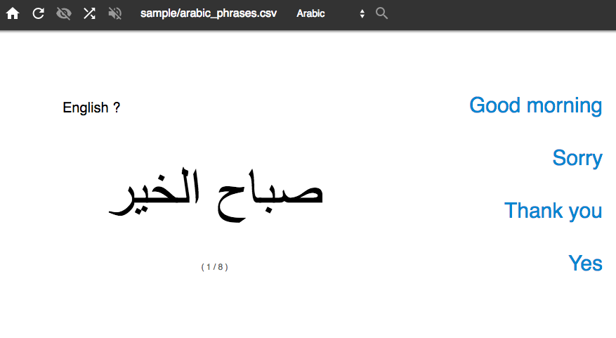
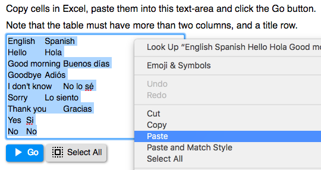
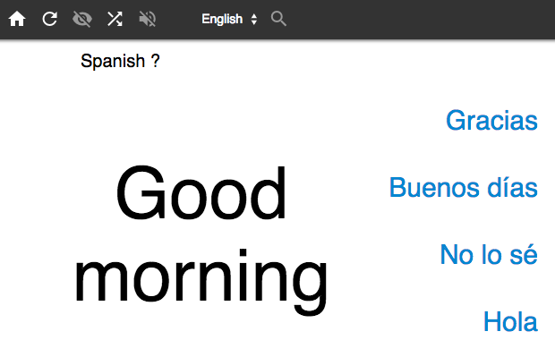
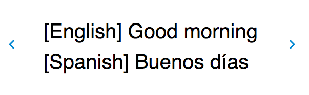
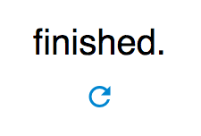
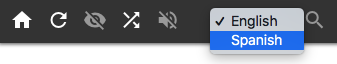
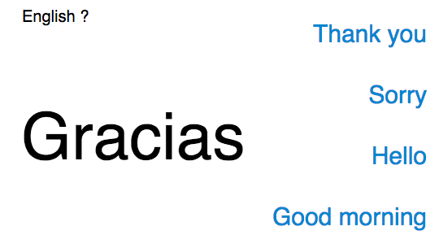
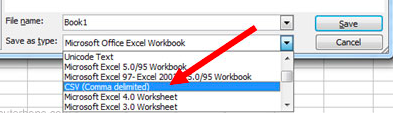
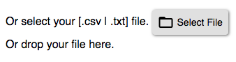

Memorizer: 为了记住生词之类的时候有用的工具
首页 - https://mochihashi.github.io/memorizer/
特点
- 可以指定自己想记住的词语，用Excel造词语表就好。
- 未连线时也可以用。下载memorizer.zip，然后用游览器打开里面的index.html。
演示页面
sample.html如何使用
- 用Excel造词语表，然后复制到剪贴板(Ctrl+C)。词语表有至少两个列，第一行是标题名字。这是词语表的例子:
English Spanish Hello Hola Good morning Buenos días Goodbye Adiós I don't know No lo sé Sorry Lo siento Thank you Gracias Yes Si No No - 用游览器打开 首页 粘贴剪贴板的内容到文本框(Ctrl+V)，单击《Go》按钮。
 - 看到第一问题之后，从选项中选择答案。
 - 选择错误答案的场合，显示正确答案。这个问题后来重复再一次。
 - 每个正确答案都选择好，问题就结束。
 - 你可以选择标题名字，
 - 问题和答案就反转。

从文件指定
除了从剪贴板的粘贴以外，可以指定词语表的文件。- 用Excel编辑词语表，把工作表另存为文本文件。
- 点击《文件》菜单里面的《另存为》，对话盒出现。
- 在《形式》选择《CSV (.csv)》或者《Unicode文件 (.txt)》，然后保存。

- 首页上，点击《select file》按钮，选择你保存的文件。
